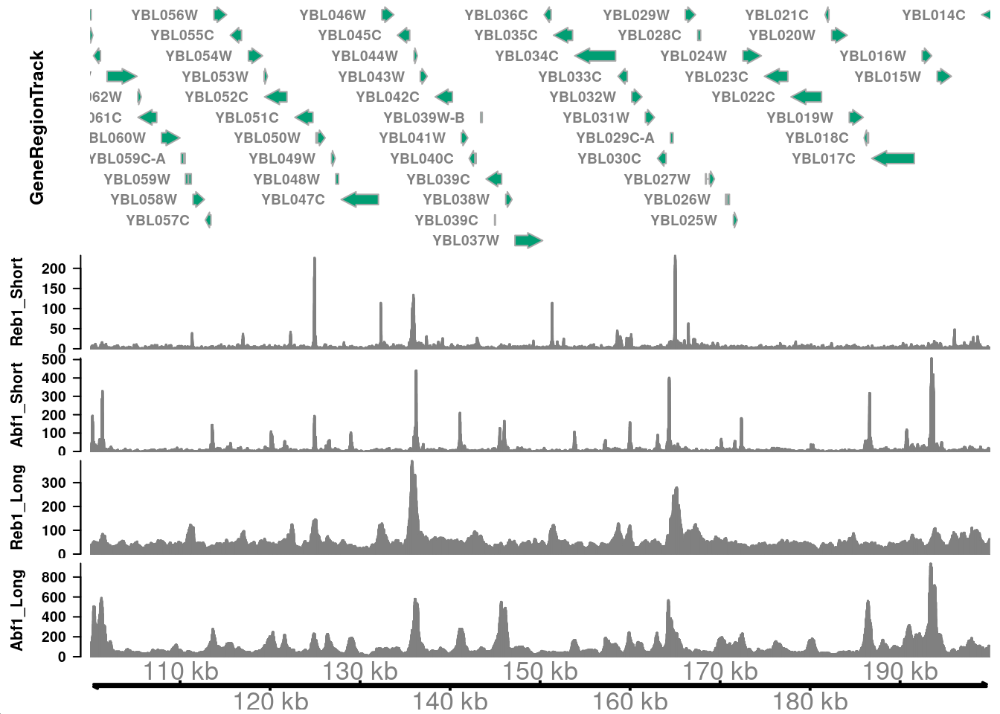
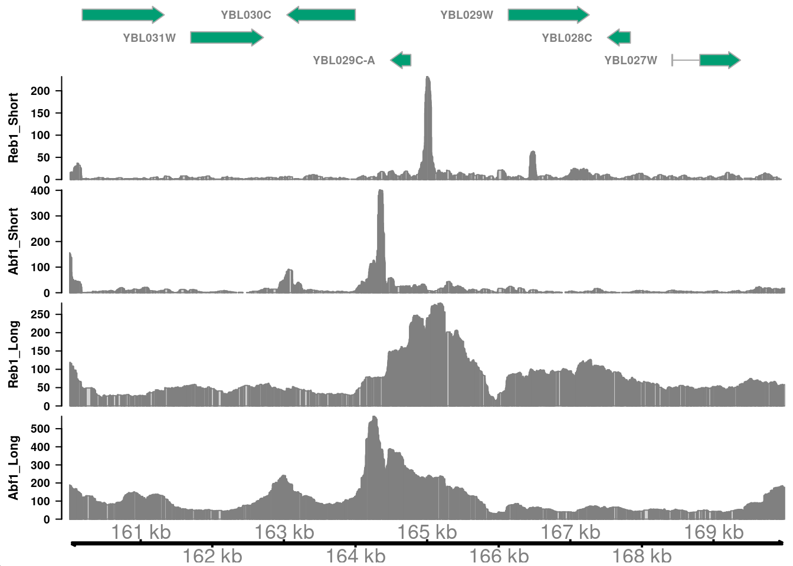
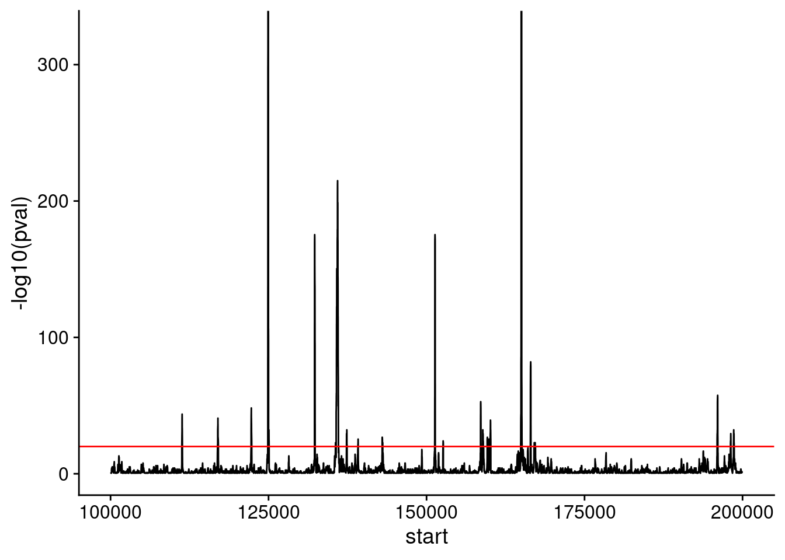
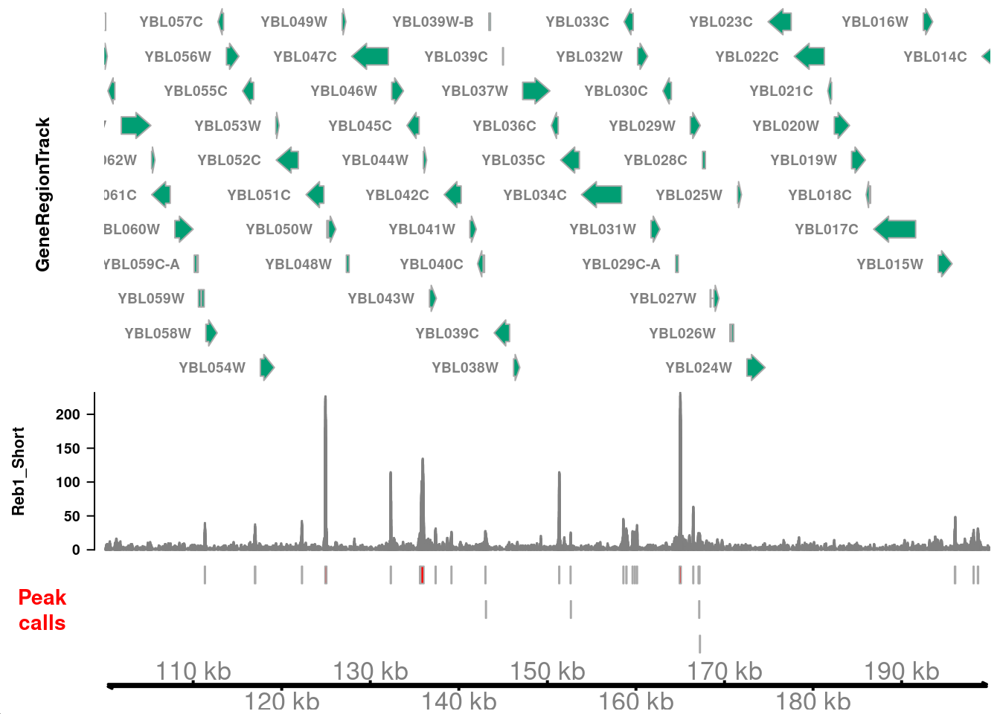
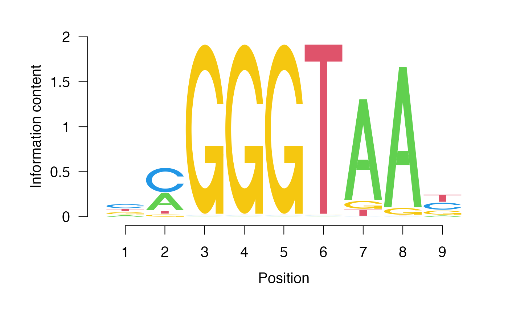

DNA Block - Problem Set 21
Problem Set
In this problem set you’ll examine the binding sites of the Reb1 transcription factor by CUT&RUN.
The first several chunks just run, putting libraries and files in your environment
Each question below is worth 4 points.
Setup
Start by loading libraries you need analysis in the code chunk below.
Next, load the coverage tracks for CUT&RUN data.
track_start <- 1e5
track_end <- 2e5
# genes track
sgd_genes_trk <-
GeneRegionTrack(
TxDb.Scerevisiae.UCSC.sacCer3.sgdGene,
chromosome = "chrII",
start = track_start,
end = track_end,
fill = "#009E73",
background.title = "white",
col.title = "black",
fontsize = 14
)
# signal tracks
track_info <-
tibble(
file_name = c(
"CutRun_Reb1_lt120.bw",
"CutRun_Abf1_lt120.bw",
"CutRun_Reb1_gt150.bw",
"CutRun_Abf1_gt150.bw"
),
sample_type = c(
"Reb1_Short", "Abf1_Short",
"Reb1_Long", "Abf1_Long"
)
) |>
mutate(
file_path = here("data/block-dna", file_name),
big_wig = purrr::map(
file_path, ~ import.bw(.x, as = "GRanges")
),
data_track = purrr::map2(
big_wig, sample_type,
~ DataTrack(
.x,
name = .y,
background.title = "white",
col.title = "black",
col.axis = "black",
fontsize = 12
)
)
) |>
dplyr::select(sample_type, big_wig, data_track)
# x-axis track
x_axis_trk <- GenomeAxisTrack(
col = "black",
col.axis = "black",
fontsize = 16
)Now that we have tracks loaded, we can make a plot.
plotTracks(
c(
sgd_genes_trk,
track_info$data_track,
x_axis_trk
),
from = track_start,
to = track_end,
chromosome = "chrII",
transcriptAnnotation = "gene",
shape = "arrow",
type = "histogram"
)
Question 1
How do you interpret the differences in signals between the short and long fragments above? I.e., where are the short fragments enriched? And where do you see more of the long fragments?
Short fragments generated from MNase digestion of transcription factor complexes are enriched in paromoter regions. Gene bodies contain more longer fragments, where nucleosomes are present and yield longer digestion products.
Question 2
Remake the plot above, but zoom in to a promoter region that has strong enrichment for both Reb1 and Abf1 (short fragments).
plotTracks(
c(
sgd_genes_trk,
track_info$data_track,
x_axis_trk
),
from = 160000,
to = 170000,
chromosome = "chrII",
transcriptAnnotation = "gene",
shape = "arrow",
type = "histogram"
)
Do the signals for Reb1 and Abf1 line up with one another? Why is this the case?
In this region, the major peaks of Reb1 and Abf1 are near but do not overlap, consistent with these factors requiring specific DNA sequences for binding.
Question 3
Next we’ll take a look at Reb1 CUT&RUN data. In the following chunk, use the approach we took in class to identify enriched sites of Reb1 binding.
reb1_tbl <- read_bigwig(here("data/block-dna/CutRun_Reb1_lt120.bw"))
# number of reads in the original Reb1 BED file
total_reads <- 16e6
genome <- read_genome(here("data/block-dna/sacCer3.chrom.sizes"))
# how can we calculate genome size?
genome_size <- sum(genome$size)
# defind the genome-wide lambda value here
genome_lambda <- total_reads / genome_size
peak_calls <-
reb1_tbl |>
# define single-base sites
mutate(
midpoint = start + round((end - start) / 2),
start = midpoint,
end = start + 1,
# use the poisson to calculate a p-value with the genome-wide lambda
pval = dpois(score, genome_lambda),
# convert p-values to FDR
fdr = p.adjust(pval, method = "fdr")
)Let’s take a look at a plot of the p-value across a chromosome.
Use geom_hline() to draw a red horizontal line at a cutoff that selects ~10 regions enriched for Reb1 binding. You’ll use this cutoff in the code chunks below.
ggplot(
filter(peak_calls, chrom == "chrII"),
# convert p-values to positive values for plotting
aes(start, -log10(pval))
) +
geom_line() +
xlim(track_start, track_end) +
theme_cowplot() +
geom_hline(yintercept = 20, color = 'red')Warning: Removed 55930 rows containing missing values (`geom_line()`).
Question 4
How many peaks are called in this region? Use the cutoff you defined above to identify “peaks” of Reb1 binding.
peak_calls |>
filter(-log10(pval) >= 20) |>
filter(start >= track_start & end <= track_end) |>
bed_merge(max_dist = 20) |>
nrow()[1] 261How many total peaks are identified in the genome using this cutoff?
# most stringent cut-off
peak_calls_sig <-
filter(
peak_calls,
-log10(pval) >= 20,
) |>
# collapse neighboring, significant sites
bed_merge(max_dist = 20)
filter(
peak_calls_sig,
chrom == "chrII" &
start >= track_start &
end <= track_end
)# A tibble: 28 x 3
chrom start end
<chr> <int> <int>
1 chrII 111281 111371
2 chrII 116933 117055
3 chrII 122242 122335
4 chrII 124885 125083
5 chrII 132274 132369
6 chrII 135587 135638
7 chrII 135696 136060
8 chrII 137335 137424
9 chrII 139151 139182
10 chrII 142981 143030
# i 18 more rowsLet’s visualize these peaks in the context of genomic CUT&RUN signal. We need to define an AnnotationTrack with the peak intervals, which we can plot against the CUT&RUN coverage we defined above.
# need a GRanges object to convert to an AnnotationTrack
peak_calls_gr <-
GRanges(
seqnames = peak_calls_sig$chrom,
ranges = IRanges(peak_calls_sig$start, peak_calls_sig$end)
)
peak_calls_trk <-
AnnotationTrack(
peak_calls_gr,
name = "Peak calls",
fill = "red",
background.title = "white",
col.title = "red",
fontsize = 16,
rotation.title = 0
)
reb1_short_trk <-
filter(
track_info,
sample_type == "Reb1_Short"
) |>
pull(data_track)
plotTracks(
c(
sgd_genes_trk,
reb1_short_trk,
peak_calls_trk,
x_axis_trk
),
from = track_start,
to = track_end,
chromosome = "chrII",
transcriptAnnotation = "gene",
shape = "arrow",
type = "histogram"
)
Question 5
Use the peak calls you defined to identify a putative sequence motif bound by Reb1. You can assume that the most abundant motif identified is the most likely candidate.
Use Google and Pubmed to identify a study that defines a Reb1 motif using a genomewide analysis. How well does your motif match the previously defined one?
The identified Reb1 motif is a good match to several studies including PMID 19305407 and 28079019.
# look at the consensus motifs
consensus(gadem)[1] "nmGGGTAAy" "nTTTTTTTTTTTn" "nCGGGrnCCssvmAsGrGn" "mmmmmmmmmmCCACACCCACACmC" "nTwwwTwwTwAhTwwTTATw" "nAmwAAwAhTAmATmAAAAn" "yTywCymTACAACwnTTyn"
# how many consensus motifs are there?
nOccurrences(gadem)[1] 1438 541 290 315 234 201 240
Now let’s look at the sequence logo for the top hit.
pwm <- gadem@motifList[[1]]@pwm
seqLogo::seqLogo(pwm)